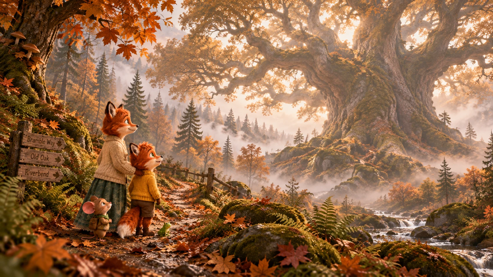
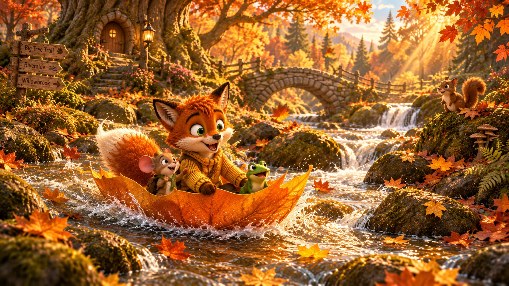

JackLight Tales
The Whispering Woods
Five little paths into the woods
Where shall we wander?
Choose a path into Barnaby's world. Watch the tales, listen by lanternlight, meet the friends, explore the artwork — or wander into a game.
The first lantern is lit
Welcome to JackLight Tales.
JackLight Tales is a home for gentle story worlds. Barnaby and the Whispering Woods is the first path through the gate — with more room to grow when the next world is ready.
Play in the Whispering Woods
A little game path has opened.
Search wide woodland scenes for Barnaby and his friends. No timer, no score — just careful looking and a little celebration when you find them.
From the art burrow
A couple of places worth wandering into.



JackLight TalesFresh from the woods
The next little adventure
Pull up a cushion. Barnaby is waiting.
Follow Barnaby into the Whispering Woods for cosy adventures, curious discoveries and a little everyday magic.